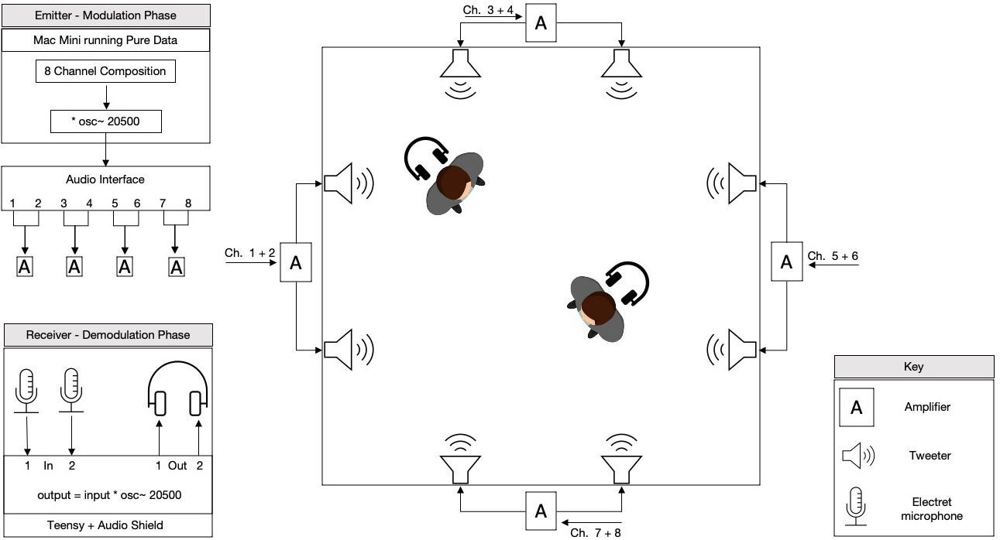
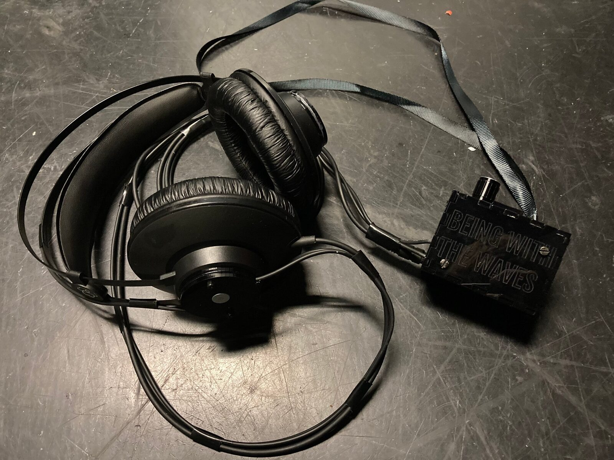
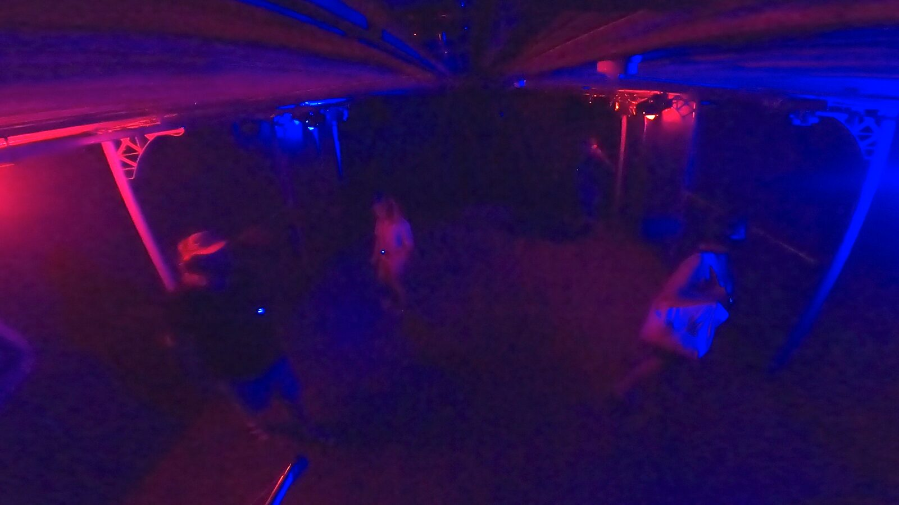

Being With The Waves: An Ultrasonic Art Installation Enabling Rich Interaction Without Sensors
Abstract
To the naked ear, the installation Being With The Waves appears silent, but a hidden composition of voices, instrumental tones, and maritime sounds is revealed through wearing modified headphones. The installation consists of an array of tweeters emitting a multi-channel ultrasonic composition that sounds physically in the space. Ultrasonic phenomena present at the listener’s ears are captured by microphones embedded on the outside of headphone earcups, shifted into audibility, and output to the headphones. The amplitude demodulation of ultrasonic material results in exaggerated Doppler effects and listeners hear the music bend and shift precisely with their movement. There are no movement sensors, mappings, or feedback loops, yet the installation is perceived as interactive due to the close entanglement of the listener with sound phenomena. The dynamic quality of interaction emerges solely through the listening faculties of the visitor, as an embodied sensory experience determined by their orientation to sounds, physical movement, and perceptual behaviour. This paper describes key influences on the installation, its ultrasonic technology, the design of modified headphones, and the compositional approach.
Author Keywords
Sound installation, sound art, interactive art, interaction, ultrasound, amplitude modulation
CCS Concepts
•Applied computing → Sound and music computing; Media arts;
•Human-centred computing → Interaction Design → Interaction design theory, concepts, and paradigms;
Introduction
Inspired by practices in the sound art tradition, this paper explores the interactive potential of installations that are ‘static’ in the sense that emitted sounds do not change as a result of listener movement via computational processes: there are no movement sensors, programmed interactivity, mappings or feedback loops. Instead, the experience of listening may be perceived as interactive due to the spatial arrangement of sound sources and close entanglement of the listener with sound phenomena physically present in the air. The interactive experience emerges as an embodied sensory experience determined by the listener’s orientation to sounds, physical movement, and perceptual behaviour.
Being With The Waves is an art installation that adopts and builds upon this paradigm. Due to ultrasonic modulation in the system, the Doppler effect is exaggerated, emphasising the close interaction of the listener with acoustic phenomena. The listener hears the consequence of her movement directly, in relation to sound sources with fixed spatial position. This paper will describe key influences on the installation’s design, its technological implementation, and the process of composing with the system.
Sound Installation Art
American sound artist Max Neuhaus is credited with first using the term ‘sound installation’ in 1971. Neuhaus was interested in placing the elements of a composition in space and thereby allowing the listener to place sounds in their own time, via their movement through space [1]. In this tradition, artists assemble audio playback technologies and compose and place sound materials in space to create a complex field of sonic phenomena. Sound is uniquely immersive and, as an art material, collapses the distance between the art object and its audience [2]. Installation art encourages a subtle shift of attention from the sound sources out there toward our listening experience in the in-between space of sound. Artworks are often described as site-specific in the sense that they are strongly tied to the site of installation and room acoustics actively contribute to the piece. Installations, therefore, highlight the situatedness of listening; contingent on the listener’s spatial relationship to the installation and attentional behaviour as they orient their ears to it.
In the 1960s installation Dream House, created by Young and Zazeela, sustained instrumental and electronic tones are played into the installation space at high volume to create standing waves; complex patterns of molecular oscillations of varying intensity, fixed in space [3]. In Stay by Sine Wave Orchestra, visitors are invited to take a small sine tone generator, set its frequency, and clip it to one of many metal rods suspended throughout the gallery space [4]. The gallery space becomes filled with, from a distance, what sounds like a cloud of white noise hanging in the air. Stepping among the wires, the listener becomes aware of shifting harmonic clusters. An even closer listening affords the perception of individual tones, micro-compositions, and the interplay of different pitches as they combine in the air.
In both of the above examples, the auditory experience is intimately dependent on the location of the listener’s ears, relative to the sounding space. The soundscape is so complex and fixed in space that as the listener moves, they perceive their changing spatial relationship to the installation with even tiny adjustments of body position.
Mediated and Augmented Listening
The above installations afford the listener direct engagement with acoustic phenomena present at the ear. Artists have also created works that allow the listener to explore physically present but inaudible phenomena via custom devices that augment the ear for superhuman listening. Here, the listener’s experience is determined by the orientation of a sensing device to the environment. For example, Kubisch's Electrical Walks invites audiences to explore urban environments using headphones that convert electromagnetic signals into sound [5]. Presented at NIME 2015, the PHOX ears listening device consists of two parabolic microphones mounted on a helmet allowing the wearer to hear distant sound sources [6].
Van der Heide’s Radioscape, is an interactive sound installation operating in public space. A composition is emitted via several transmitters in the electromagnetic spectrum. Visitors explore the installation using a handheld receiver with two antennae, which have different sensitivities relating to the electronic and magnetic components of the electromagnetic field. Walking around, some signals become louder and others fade, while movements of the receiver allow more nuanced exploration [7].
Ultrasonic Instruments and Installations
Ultrasound typically refers to sounds with a frequency higher than 20kHz, phenomena that are physically present, but imperceptible due to the limits of human hearing. Ultrasonic distance sensors are widely used in digital musical instruments (DMIs) and interactive devices (e.g. [8]), but arguably the technical and creative potential of ultrasound has been underexplored. At NIME 2010, Ciglar introduced a musical interface allowing mid-air, haptic manipulation of audio material emitted via an array of ultrasonic transducers [9]. Raes describes a system for sensing the gestures or bodily movements of a musical performer, based on the continuous reflection of ultrasonic waves from their body. Utilizing the Doppler effect, the system senses the dynamics of motion rather than positional information, a paradigm that the author argues is well suited for implementation in musical instruments [10].
Many artists have used directional sound in installations [11], via the use of parametric speakers such as the Audio Spotlight [12], which consist of an array of ultrasonic transducers and allow sound to be projected in a hyper-directional beam. Artists such as Pampin [13], Alunno [14], Rijnierse and Bothof [15] have worked closely with this technology to create installations that exploit the strong directivity and reflectivity of ultrasound. In Alunno's The Soundhouse, for example, a rotating parametric speaker projects a soundscape around its environment like a lighthouse casts a beam of light across the sea [14].
Interactivity Without Sensors
Each of the installations described up to this point may be described as ‘static’ rather than ‘dynamic-interactive’ in that sounds do not objectively change as a result of listener actions. They do not fit existing definitions of interactive art systems such as those proposed by Cornock and Edmonds [16] and may be contrasted with installations - prevalent in NIME discourses - that employ sensing technologies to detect aspects of human behaviour and translate them into data. A system is programmed to interpret that data and generate output via speakers, displays, or actuators [17]. Within this paradigm, bodily movement is sensed and mapped to sound, but that sound is not the direct result of movement, it is a designed output. In the context of DMI design, Reed and McPherson describe such a situation as enabling ‘indirect control’ due to the presence of an intermediary stage between the user and machine [18].
We contend that the experience of listening to ‘static’ installations may be perceived as richly interactive from a human perspective, due to the spatial arrangement of sound sources and close entanglement of the listener with sonic phenomena. The interactive experience emerges solely through the listening faculties of the visitor, determined by their orientation to sounds, physical movement, and perceptual behaviour. This interactivity is relational, emerging as a result of fixed conditions and the entire human-technology-world relationship. Like a traditional musical instrument, the installation has acoustic properties that are specific to its design and materiality. It does not need to know anything about human behaviour and as such, issues such as latency and bandwidth limitations do not exist. ‘Static’ installations afford nuanced and intimate interaction on even a micro-scale; aspects that are valued in DMI design [19] [20] and may help to engage listeners with sound installations in public art contexts.
Being With The Waves, An Ultrasonic Art Installation
To explore the interaction afforded by close entanglements with sonic phenomena we developed Being With The Waves, a multi-channel sound installation that allows listeners to access the imperceptible world of ultrasound. It consists of an array of tweeters emitting a spatial composition that sounds physically in the space, but only by wearing a modified set of headphones are visitors able to hear it. Inspired by installation practices in the sound art tradition, the intention is to create an acoustic situation where sound has a strong spatial profile, such that bodily movement leads to clearly discernible sonic variation. By mediating listening, the intention is to emphasise the presence of sonic phenomena.
Ultrasonic Modulation
The installation makes use of amplitude modulation (AM) to shift sounds composed in the audible range into the ultrasonic, and later to shift them back to audibility. The modulator multiplies the target audio signal by a 20.5kHz sinusoidal carrier, shifting the frequency components of the signal by this amount. Demodulation follows the same process; multiplying by the same carrier frequency returns the signal to the audible range. The original audio remains remarkably intact, retaining its fidelity but coloured by room acoustics, bodily presences, and the frequency response of the signal chain.
The multi-channel composition (of six to eight speakers, depending on the installation space) is composed in the audible range and arranged in Ableton Live running at a sample rate of 96kHz. Before being emitted to individual tweeters positioned in the exhibition space, each audio channel is amplitude modulated using a Max for Live device. Visitors to the space are invited to listen via specially designed headphones. Ultrasonic audio signals are captured by two EM272 electret microphone capsules housed on the headphone earcups to approximate a binaural setup. These signals are routed to a custom amplifier circuit and then to a Teensy 3.6 via its audio shield. A Teensy sketch running at 96kHz demodulates each microphone signal via the same process of amplitude modulation, before outputting the signal through the corresponding ear of the headphones. An Adafruit Powerboost 500 powered by a rechargeable Lipo battery supplies 5V to the Teensy and the amplifier circuit. See Figure 1 for an overview of the system.


Figure 1
An overview of the installation system.
Implementation of the system requires careful attention to the frequency response of components and the availability of high sample rates. On the emitter side, the wide frequency response of the RME Fireface 800 interface allowed experimentation with carrier frequencies of up to 40kHz. On the receiver side, the Teensy 3.6 was chosen because although its audio shield is advertised as running at a fixed sample rate of 44.1kHz, PJRC forum users have shared the code to enable high sample rates up to 192kHz [21].
To emphasise the act of listening, the headphones should recede into the background of perceptual awareness. Listeners should not need to hold anything nor be continuously aware of the technology’s presence. Therefore a small acrylic box was designed to be worn around the neck, as seen in Figure 2. This houses all electronic components and includes an on/off switch and rotary knob for volume control.


Figure 2
A set of modified headphones designed for the installation Being With The Waves
Doppler Effect
Early experiments with the setup involved testing different sound sources: simple oscillators, recordings of speech, and musical instrument samples. Moving a single microphone in relation to a single tweeter emitting a sine tone, exaggerated pitch bends were noticed as the microphone moved back and forth. Using richly harmonic source material such as sawtooth waves or bassoon samples, timbral distortions were noted whereby the sound became inharmonic when the microphone moved.
The Doppler effect is responsible for these exaggerated and unusual sonic changes. It is a familiar process where the perceived frequency of a sound changes when the sound source moves toward or away from the listener, owing to the finite speed of sound in air [22]. In everyday life, the Doppler effect is often noticeable with moving vehicles, where an approaching vehicle's sound will be shifted upward in pitch, and a receding vehicle's sound will be shifted downward.
In Being With The Waves, ultrasonic modulation has the unusual property of exaggerating the Doppler effect. Doppler shift functions as a ratio in frequency, where each frequency component is multiplied by a factor that depends on the velocity between source and listener. Consider a source signal of frequency 𝑓𝑠 = 1000Hz, a carrier of frequency 𝑓𝑐 = 25000Hz, and a Doppler shift ratio 𝑟 = 1.01 from the motion of the microphone with respect to the tweeter. Without ultrasonic modulation, the perceived frequency would be 𝑟𝑓𝑠 = 1010𝐻𝑧.
With ultrasonic modulation, the tweeter will emit frequency components at 𝑓𝑐 ± 𝑓𝑠 , in this case 24kHz and 26kHz. Doppler shift will cause the received frequencies at the microphone to be 𝑟(𝑓𝑐 ±𝑓𝑠), or 24.24kHz and 26.26kHz. When these signals are demodulated, the resulting frequencies will be 𝑓𝑐 −𝑟(𝑓𝑐 ± 𝑓𝑠): 1260Hz and 760Hz. What was previously a change of just 1% in frequency is now an audible shift of around 25%, and split into two tones owing to the two sidebands of the modulation process. This effect is of course entirely dependent on movement and a completely static position will not introduce any Doppler shift.
Designing With Sound
Although the audio fidelity of sounds is preserved in the modulation process, their spatial appearance changes due to the increased directivity of ultrasound, the influence of material components, and to a lesser extent the acoustic properties of the space in which the technology is installed. Listening through the installation system, sound becomes strange and behaves in unfamiliar ways.
The compositional process entailed listening to different sound materials in order to understand their spatial appearance from a first-person perspective. Ideas that were not grounded in the experience of listening to the installation system, but of composing for audible multi-channel speaker setups simply did not translate. The process of composing, therefore, necessitated a materially-guided approach, whereby the sonic content is guided by the affordances and constraints of the installation, rather than an imposed conceptual or aesthetic idea.
While listening and experimenting, the first author noted experiential impressions associated with different sound materials. Simple sustained sounds such as sine tones or harmonic instrumental tones appear to fill the space as an ambient presence. The Doppler effect is very prominent; tiny sonic fluctuations may be appreciated via micro-movements and more prominent distortions to the sound are heard as a result of quicker movements over a larger area. The sonic quality of these ‘distortions’ brings to mind the image of moving one’s body through a fluid that fills the room, wherein the ripples and disturbances are a direct physical result of both bodily actions and the acoustic properties of water. Interacting with simple sustained sounds in the installation has a comparable 'feel'. By contrast, inharmonic, articulated, and transient-rich sounds have a well-defined spatial profile. Turning on the spot, the listener becomes aware of their changing orientation to sounds, but the system distorts their perception of distance. Speech, for example, sounds broadcast as though on the radio, but with the signal coming from a very particular, narrow location and perceived close to the ear rather than originating from a faraway source.
The compositional process was also guided by the intention to contextualise the sensation of interaction within a sound design schema, such that both actively contribute to meaning-making in the work. The question 'why is this technology used in this context?' was asked continually. Ultimately, the sensation of ‘fluidity’ associated with the Doppler effect and the suitability of the installation to speech and environmental sound recordings inspired the artistic concept for Being With The Waves. Excerpts from interviews exploring sensory experiences in and with the sea - how it feels to catch a wave, to float, or be submersed - are interwoven with an immersive musical composition. The installation, therefore, is intended to elicit an experience of being with the phenomena of sound, the sensation of which is echoed by descriptions of being with the water. Excerpts from the installation may be heard in Video Example 1.
Video Example 1 - Headphones Recommended
URL: https://www.youtube.com/watch?v=TSlTEDYbdAc
Public Exhibition
Being With The Waves was exhibited for four days at the Ramsgate Festival of Sound in September 2021 (see Figure 3). 110 listeners experienced the installation and 44 people completed a short survey about their experience. Some listener responses suggest an awareness of interactive effects due to the Doppler effect. For example, L46 says that ‘whilst moving, I could sense a dissonance that I seemed to naturally want to resolve.’ L47 describes shaking their head a lot while listening to the installation and ‘enjoying the influence I then felt I had over of the sound.’ L58 describes an awareness of ‘360 multidimensional body… sensors all over the body informing me of where I am and how I am in the space.’ These responses suggest that although the installation is ‘static’ and sensor-free, listeners did indeed perceive the installation as interactive.


Figure 3
Listeners interact with Being With The Waves during its installation at Ramsgate Festival of Sound
Conclusions and Future Work
Inspired by installation practices in the sound art tradition, Being With The Waves is sensor-free. Nevertheless, we argue that it is perceived as interactive due to the spatial arrangement of sounds and close entanglement of the listener with acoustic phenomena. These aspects are emphasised by ultrasonic modulation, which leads to exaggerated Doppler effects. The listener hears the direct consequence of their bodily movements in relation to sounds fixed in space. This paper described key influences on the installation’s development, its technical implementation, and the materially-guided approach that was taken to composition.
Being With The Waves is designed as a research probe for exploring the experience of listening to sound installation art. Future work will involve further participant studies in both controlled and in-the-wild environments, during which hour-long interviews will be conducted with listeners. Employing the micro-phenomenological interview technique, these sessions are designed to help listeners articulate the multi-modal sensations of sonic interaction and perceptual micro-acts involved in spatial listening.
Acknowledgments
We would like to thank the Ramsgate Festival of Sound, Ramsgate Music Hall, and the local people who donated their valuable time to be interviewed for the installation. This research was supported by the EPSRC grant EP/L01632X/1 (Centre for Doctoral Training in Media and Arts Technology) and by the Royal Academy of Engineering under the Research Chairs and Senior Research Fellowships scheme.
Ethics Statement
Data was collected for research purposes during the public exhibition of Being With The Waves. After a free interaction with the installation, adult visitors were provided with information about the research and invited to participate by completing a short post-experience survey and consent form. The installation space was also filmed for periods and this was clearly signposted to listeners before entering the installation. Consent was sought from listeners as they exited the installation and only footage for which the consent of listeners was given, was included in the research. The study received ethical clearance from Queen Mary University of London ethics committee.
Citations
- ↩Seiffarth, C. (2012). About Sound Installation Art. Kunstjournalen B-Post.
- ↩Brewster, M. (1999). Where, There or here? In B. LaBelle & S. Roden (Eds.), Site of Sound: of Architecture and the Ear (pp. 100–104). Errant Bodies Press.
- ↩LaBelle, B. (2015). Background noise: perspectives on sound art. Bloomsbury Publishing USA.
- ↩Jo, K., Furudate, K., Ishida, D., & Noguchi, M. (2005). The Sine Wave Orchestra, Stay. Proceedings of the 13th Annual ACM International Conference on Multimedia, 571–573.
- ↩Cox, C. (2006). Invisible cities: an interview with Christina Kubisch. Cabinet Magazine, 21.
- ↩Kleinberger, R., Dublon, G., Paradiso, J. A., & Machover, T. (2015). Phox ears: a parabolic, head-mounted, orientable, extrasensory listening device. NIME ’15: Proceedings of the 2015 International Conference on New Interfaces for Musical Expression, 30–31.
- ↩van der Heide, E. (2013). Radioscape: Into Electromagnetic Space. Leonardo Music Journal, 15–16.
- ↩Overholt, D. (2005). The overtone violin. Proceedings of the 2005 Conference on New Interfaces for Musical Expression, 34–37.
- ↩Ciglar, M. (2010). An Ultrasound Based Instrument Generating Audible and Tactile Sound. NIME 2010: Proceedings of the International Conference on New Interfaces for Musical Expression, 19–22.
- ↩Raes, G.-W. (2011). Gesture controlled virtual musical instruments. https://logosfoundation.org/ii/gesture-instrument.html
- ↩Alunno, M., & Yarce Botero, A. (2017). Directional landscapes: using parametric loudspeakers for sound reproduction in art. Journal of New Music Research, 46(2), 201–211.
- ↩Yoneyama, M., Fujimoto, J., Kawamo, Y., & Sasabe, S. (1983). The audio spotlight: An application of nonlinear interaction of sound waves to a new type of loudspeaker design. The Journal of the Acoustical Society of America, 73(5), 1532–1536.
- ↩Pampin, J., Kollin, J. S., & Kang, E. (2007). Applications of Ultrasonic Sound Beams in Performance and Sound Art. Interactional Computer Music Conference (ICMC) Proceedings.
- ↩Alunno, M. (2018). Sound Straight Ahead: Parametric Speakers in Two Soundscape Installations. Leonardo Music Journal, 28, 60–64.
- ↩Everyday Listening. (2017). Relief. http://www.everydaylistening.com/articles/2017/9/24/relief.html
- ↩Alunno, M. (2018). Sound Straight Ahead: Parametric Speakers in Two Soundscape Installations. Leonardo Music Journal, 28, 60–64.
- ↩Cornock, S., & Edmonds, E. (1973). The creative process where the artist is amplified or superseded by the computer. Leonardo, 6(1), 11–16.
- ↩Bongers, B. (2002). Interactivating spaces. Proc. Symposium on Systems Research in the Arts, Informatics and Cybernetics.
- ↩Reed, C., & McPherson, A. (2020). Surface Electromyography for Direct Vocal Control. NIME 2020: Proceedings of the International Conference on New Interfaces for Musical Expression.
- ↩Wessel, D. L., & Wright, M. (201 C.E.). Problems and prospects for intimate musical control of computers. NIME ’01: Proceedings of the 2001 International Conference on New Interfaces for Musical Expression.
- ↩Jensenius, A. R. (2015). Microinteraction in Music/Dance Performance. NIME ’15: Proceedings of the 2015 International Conference on New Interfaces for Musical Expression.
- ↩forum.PJRC. (2016). Bat Detector. https://forum.pjrc.com/threads/38988-Bat-detector
- ↩Reiss, J. D., & McPherson, A. (2014). Audio effects: theory, implementation and application. CRC Press.